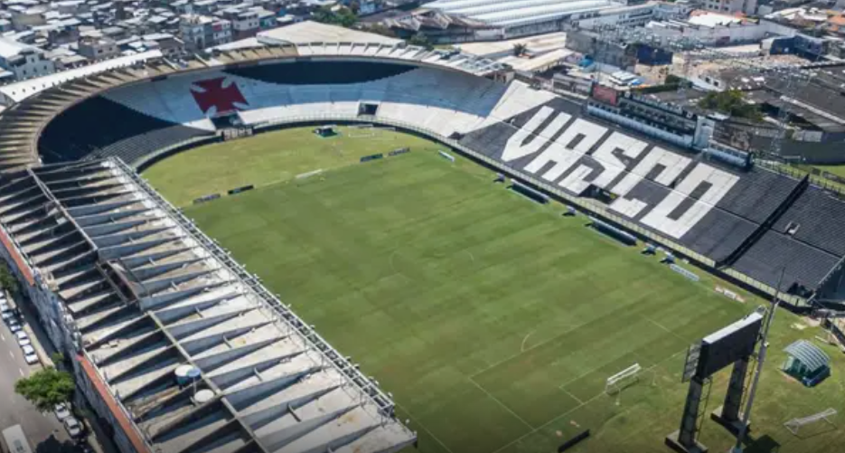
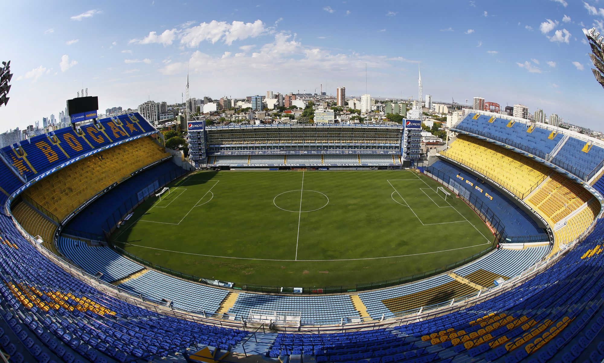
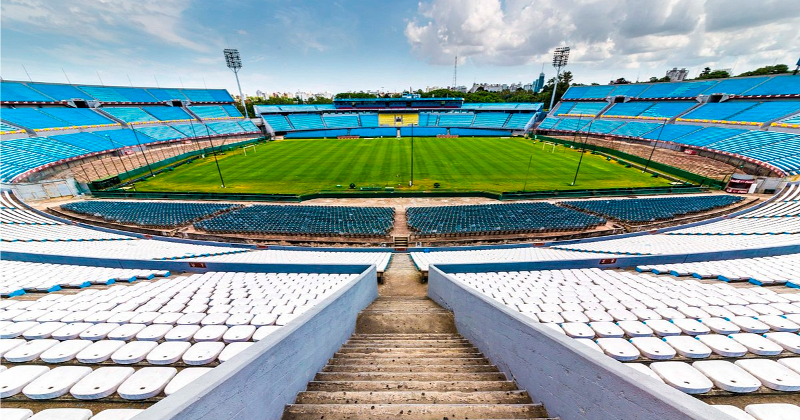
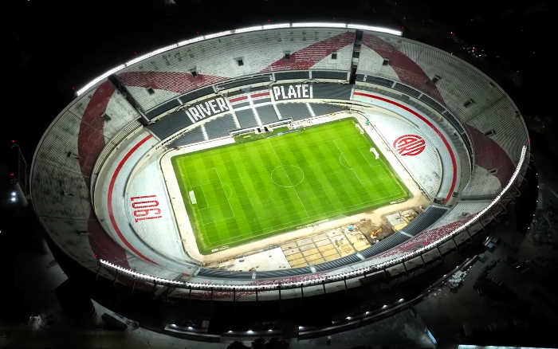
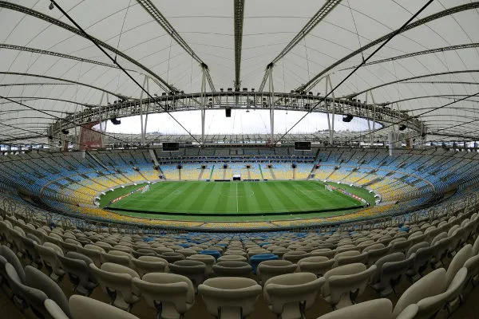

La Bombonera
The La Bombonera stadium was inaugurated on May 25, 1940. Located in the famous Buenos Aires neighborhood of La Boca, the colorful Alberto J. Armando Stadium, better known as “La Bombonera”, is the home stadium of Club Atlético Boca Juniors.

Centenario
The stadium was built to host games during the first Football World Cup in 1930. It is where the Uruguayan Football Team normally plays

Monumental de Nunez
Located in the upscale neighborhood of Belgrano, more precisely at the intersection of Figueroa Alcorta and Udaondo avenues, the Monumental de Nuñez stadium has been the stage for major and classic football matches.
